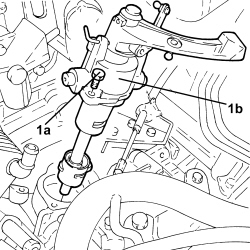
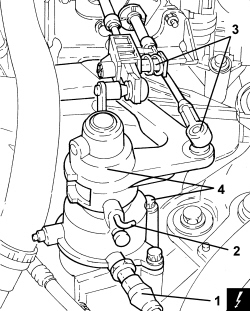

2110C50 GEAR SELECTION AND ENGAGEMENT UNIT - R.R.
- Path
- Procedures > 21 GEARBOX UNIT > 2110 MANUAL GEARBOX WITH DIFFERENTIAL > 2110C GEAR CASES AND COVERS FOR MANUAL GEARBOX WITH DIFFERENTIAL > 2110C50 GEAR SELECTION AND ENGAGEMENT UNIT - R.R.
- Kind
- repair procedure (removal / refitting; the operation number is the code)
- Applies to
- all engines; all production periods
- Interactive page
- https://sloeber94.github.io/elrnDB-aBrrSpdr/en/#/946002063
Applies to: engines: 2.2 JTS; all production periods
 Removing
Removing
 Refitting
RefittingOp. 5530B52 BATTERY SUPPORT/DRIP TRAY - R.R
Op. 0010T20 ENGINE COOLANT - CHANGE
- Loosen the band and disconnect the water supply pipe to the radiator, thermostat state and move it aside.
- Loosen the band and disconnect the two water pipes from the water-engine oil heat exchanger and move them aside.
1. Disconnect the gear selector cable.
2. Disconnect the gear engagement cable.

Applies to: engines: 2.2 JTS; all production periods
1. Undo the bolts (1a) and remove the gear selector/engagement assembly (1b).

Applies to: engines: 2.2 JTS; all production periods
Refitting
Removing- Place the gear selector/engagement assembly inside the gearbox and secure it tightening the bolts to the recommended torque.
Component | Fastening | dia | Value (daNm) | Validity |
|---|---|---|---|---|
Gear selection and engagement assembly | Bolt | M8 | 2.0 |
- Connect the gear engagement/selector cables.
- Connect the water pipes to the water-engine oil heat exchanger using the bands.
- Connect the supply pipe to the radiator, thermostat side using the band.
Applies to: engines: 3.2 JTS; all production periods
Removing
RefittingOp. 1016A10 SOUND-PROOFING COVER - R.R
Op. 5530B52 BATTERY SUPPORT/DRIP TRAY - R.R
1. Disconnect the electrical connection for the reversing light switch.
Description | Connector | |
|---|---|---|
1 | Reversing lights switch |
2. Lift up the gear selection unit and fit a suitable locking dowel.
3. Disconnect the gear selection and engagement cable rods from the gearbox.
4. Undo the bolts and remove the gear selection and engagement unit.

Applies to: engines: 3.2 JTS; all production periods
Refitting
Removing- Place the gear selection and engagement unit in position and tighten the bolts to the recommended torque.
Component | Fastening | dia | Value (daNm) | Validity |
|---|---|---|---|---|
Gear selection and engagement assembly | Bolt | M8 | 2.0 |
- Connect the gear selection and engagement flexible rods to the gearbox.
- Remove the locking dowel for the gear selection ane engagement unit.
- Connect the electrical connection for the reversing light switch.
Applies to: engines: 2.4 JTD 20v; all production periods
Removing
RefittingOp. 5530B52 BATTERY SUPPORT/DRIP TRAY - R.R
Op. 0010T20 ENGINE COOLANT - CHANGE
- Loosen the band and disconnect the water supply pipe to the radiator, thermostat state and move it aside.
- Loosen the band and disconnect the two water pipes from the water-engine oil heat exchanger and move them aside.
1. Disconnect the gear selector cable.
2. Disconnect the gear engagement cable.
Applies to: engines: 2.4 JTD 20v; all production periods
1. Undo the bolts (1a) and remove the gear selector/engagement assembly (1b).
Applies to: engines: 2.4 JTD 20v; all production periods
Refitting
Removing- Place the gear selector/engagement assembly inside the gearbox and secure it tightening the bolts to the recommended torque.
Component | Fastening | dia | Value (daNm) | Validity |
|---|---|---|---|---|
Gear selection and engagement assembly | Bolt | M8 | 2.0 |
- Connect the gear engagement/selector cables.
- Connect the water pipes to the water-engine oil heat exchanger using the bands.
- Connect the supply pipe to the radiator, thermostat side using the band.